スレイヤーズ
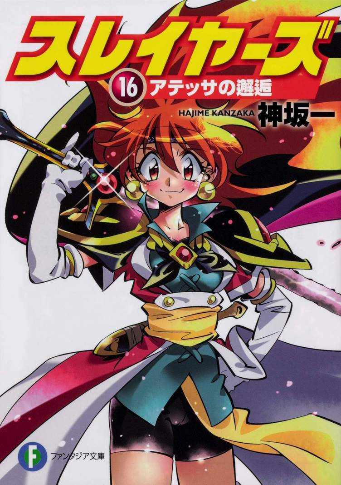 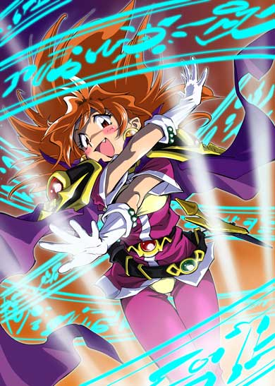 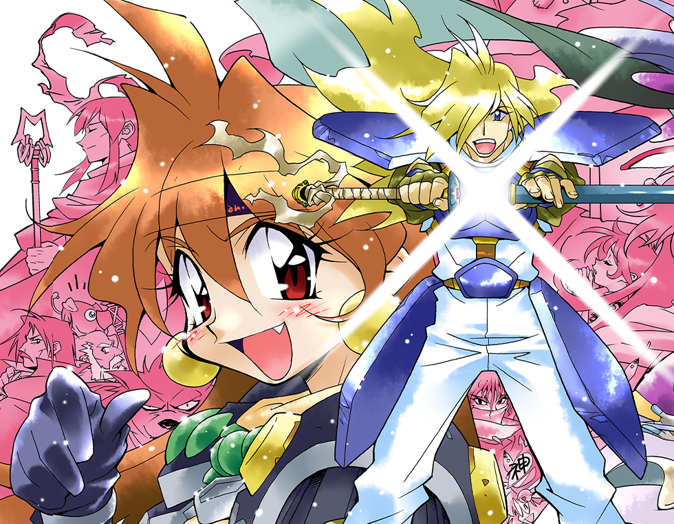作者 神崎（かんざき） 一（はじめ）
既刊情報 現在２０２０年１月 17巻まで
この作品で一番好きなキャラクターは 金色の魔王（こんじきのまおう） ロード・オブ・ナイトメア です。
ロード・オブ・ナイトメアとは、作中では金色の魔王、悪夢の王、すべての闇の母、魔族たちの真の王、混沌の海にたゆたう者などと称されています。スレイヤーズの世界観では、『混沌の海』に突き立てられた杖の上に世界が存在すると言われており、主人公であるリナ=インバースも彼女のことを『混沌の海にたゆたう魔族達の王』だと思っていたのだが、実際は『混沌の海そのもの』であり、魔族のみならず神族や人間を含む『生きとし生ける者すべての母』(世界の創造主)と言える存在です。
魔族達からは金色の母と呼ばれています。
作中では、ロード・オブ・ナイトメアの力を借りる魔法として「重破斬（ギガ・スレイブ）」という呪文が存在してますが、実際は虚無の端末を引き込む、つまり金色の魔王の一部を降臨させる呪文。未完成版は闇の球を目標内部に転移して、闇の火柱を弾けさせ目標を破壊する。完全版は完全に金色の魔王を降臨させる様なものであり、作中ではリナの身体を拠代として降臨している。
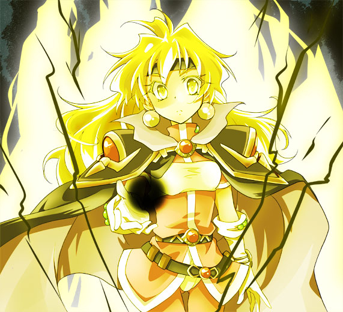
この作品は、僕が小さいときからよく見ていたもので、主人公達のドタバタだったりたまにあるギャグがとっても面白い作品です。
主人公であるリナ・インバースが故郷から旅に出て、出会った仲間たちと一緒に魔族と戦ったり、ドタバタな珍道中が書かれているファンタジー小説です。
本作はライトノベルというジャンルを一般層にまで広げた、いわば「ライトノベルの金字塔」といえる作品でもあります。
本編自体は2000年発刊の第15巻『デモン・スレイヤーズ!』で一旦完結していますが、２０１８年に１６巻である『アテッサの邂逅』が発売されて１８年ぶりに再開され、ドラゴンマガジン2019年7月号にて正式に第三部の展開が開始されることが発表されました。16巻は発売されてすぐに売り切れて重版されました。
主人公であるリナ・インバースは、長い栗色の髪を持ち、普段はバンダナで隠している額に2つのほくろを持っている。「悪人に人権はない」をモットーとし、懐がさみしくなると趣味と実益を兼ねて盗賊のアジトを襲撃して路銀を稼ぐなど、型破りな性格をしています。（仲間に対しては筋を通そうとする面倒見のいい面もあります）そのため「盗賊殺し（ロバーズ・キラー）」の通り名があり、壊滅させた盗賊団は数千にも上ると噂されている。食に対する執念は凄まじく、行く先々の食堂や宿屋で全メニュー制覇を狙い、チャンスあらば他人に飯代をおごらせ、食べる量も半端ではない。その執念は、戦争を起こして暗殺者の活躍できる時代を作ろうとする暗殺者に「戦争が起こると名物料理が食べられなくなる」という理由で怒りを燃やしたこともあるほどです。
主人公の通り名や噂には、「ドラゴンもまたいで通る」より「ドラまた」リナとも呼ばれていたりする。その他、沢山の悪い意味での通り名を持ち、『魔竜王が、人間の魂を狩り集めるために人の姿に変化しており、ある程度ダメージを与えると、巨大な竜になる』、『本当の年齢は数百歳、巨城を一撃で粉砕できるほどの呪文を連打できる』、『五百年前に滅んだレティディウス公国の大魔道士で、本人は既に死んでいるのだが、その残留意思を封じられた黒いバンダナが持ち主を操っている』、『額から触角が伸びてハエを捕食する』、『口から怪光線を発射して悪人を一掃する』、等といった都市伝説もあちこちで囁かれている。さらに『命にかかわる危険な生物ベスト百』という本や『友達にしたくない人物ベスト10』というランキングに載っていたり、『巨大な体格と薄青い肌、額に生えた小さな角を前髪で常に隠しており月のない夜しか活動しない』（某国の諜報員による綿密な調査の結果）と最早人間扱いされていない場合も。果ては本人の知らないところで勝手に破壊神に祭り上げられ、『リナ・インバース神教』なる新興宗教が出来ていたほど。
天地無用！
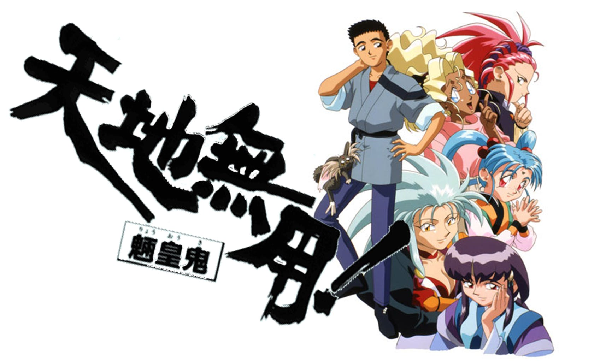 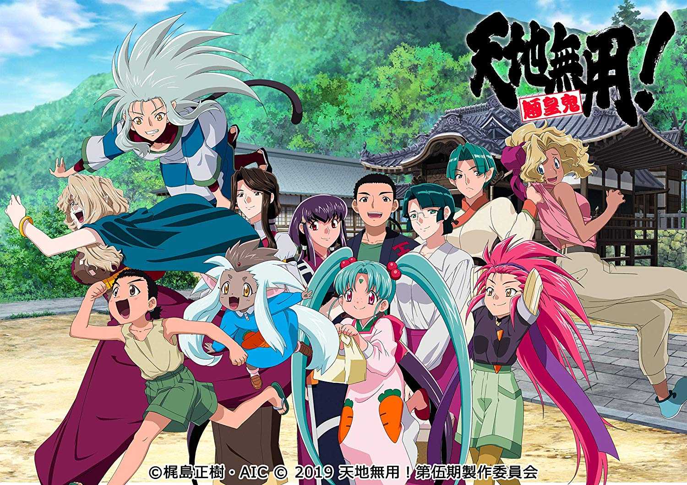作者 梶島（かじしま） 正樹（まさき）
既刊情報 原作完結 現在2020年1月 外伝GXP17巻まで
この作品で一番好きなキャラクターは 白眉 鷲羽 （はくび わしゅう）です。（画像の赤髪の人）
白眉 鷲羽とは、自称「宇宙一の天才科学者」。哲学士。外見は10代前半の少女と大人の女性の二通り（普段は前者）。「ちゃん」付けで呼ばれることを好み、相手に対しては「殿」を付けて呼ぶ。銀河アカデミーの設立者の一人。年齢は2万歳以上。世界の謎を探るために高次元生命体としての能力と記憶を封印して人間として生活している(前述の年齢はこの次元の人間として存在し始めてからの年齢であって、実際には異なる次元、異なる時代で、異なる人生を何度かやり直している)。本来の存在は、津名魅および訪希深とともに宇宙の創造主である創生の三女神（三命の頂神）の長女である。
本作のヒロインである 魎呼および魎皇鬼＆福 達の母親である他、学生時代に恋に落ちた九羅密美醸との間に後のGP創始者であり世二我総帥の九羅密美雲を儲けており、その曾孫に当るヒロインの一人九羅密美星は鷲羽の玄孫という血縁関係にある。
マッドサイエンティストである。
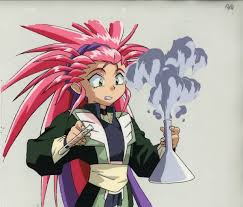
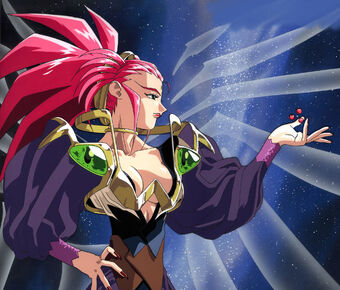
この作品は、僕が中学生の時に見たもので、DVDも持っている作品です。この作品の白眉 鷲羽が作った物を見て物作りをしてみたいと思い物作りの道に進みました。
この作品は2位となっていますが、同列1位と言っても変わりありません、それぐらい好きな作品です。
作品の舞台は、地球や宇宙空間など様々であり『天地無用!』世界の銀河系では先史文明の影響により地球を含む多数の星に交配可能な人間（それ以外の種族も）が存在し、いくつもの星間国家が形成されています。
本作の主人公である柾木天地〔まさき てんち〕は、岡山県立倉敷西高等学校に通うごく平凡な高校生だったが、柾木神社の祠に封印されていたミイラ化した鬼（正体は魎呼）を解放してしまったことがきっかけとなり、超常現象と女難の日々を味わうことになる。さまざまな経緯を経て、自らが銀河連合最大規模の勢力を誇る王政国家“樹雷”の四大皇家のひとつ、柾木家の直系（現樹雷皇の曾孫）であることを知る。
この作品は天地無用！とそのOVAである天地無用！魎皇鬼とわかれており、原作とOVAとでは話が繋がっておらずほとんど別の作品と言ってもいいです。画像は魎皇鬼の方であり、現在第4期まであり、もうすぐ第五期が発売されます。（上、一期・下、五期）
痛いのは嫌なので防御力に極降りしたいと思います。
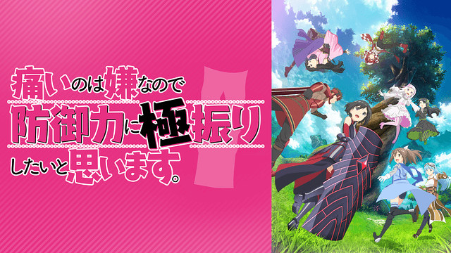 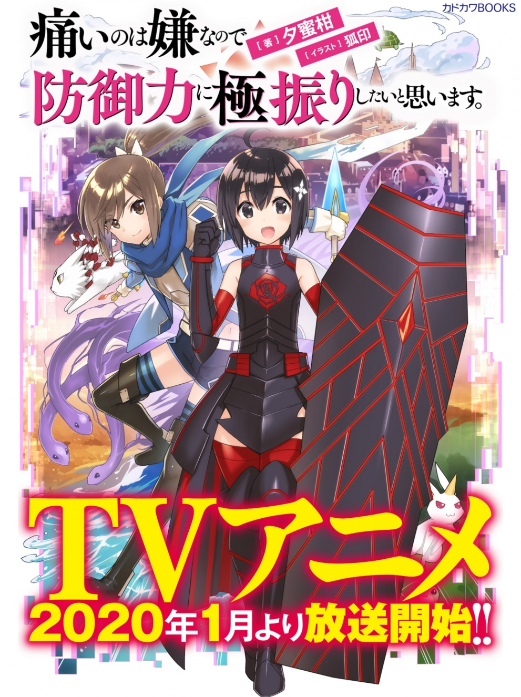 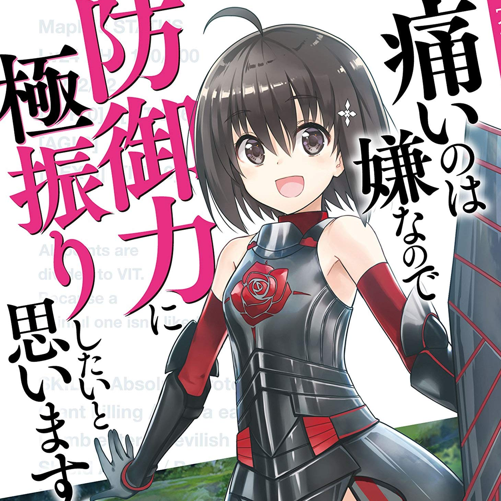作者 夕蜜柑（ゆうみかん）
既刊情報 現在２０２０年１月 ８巻まで
この作品で一番好きなキャラクターは 本作の主人公である メイプル（本名：本条 楓（ほんじょう かえで））です。
本条 楓とは、黒髪黒目で、アホ毛が特徴の美少女。ゲーム初心者ゆえの常識に囚われない予測不能な行動と偶然によって様々なスキルを獲得し、レベルが上がると防御に極振りし続けた結果、通常攻撃では全くダメージを受けないほどの防御力を有するようになる。ダンジョンで毒竜との戦いの最中に【毒無効】を獲得し、さらに毒竜を食べるという方法（HPドレインに相当）で倒したことによって、レアスキル【毒竜】（ヒドラ）とユニークシリ－ズのレア装備を獲得する。可愛らしい外見と初心者らしい初々しさ、そして無敵の強さによってプレイヤーたちから「歩く要塞」と呼ばれて興味と畏怖を抱かれる。物語の進行とともに防御力（VIT）は上昇し続け、自爆系スキルの大ダメージにも耐えられるようになっている。メイプル自身の移動速度の遅さは変わらないが、浮遊シロップ[1]や【暴虐】【機械神】の砲撃の反動など、様々なスキルを利用してカバーしている。
とても素直で真っ直ぐな性格で、誰とでもすぐに仲良くなれるほど人懐っこい。深く考えずに思い付いたことをすぐに行動に移すが、サリー曰く普段から斜め上行く突拍子もないことを思いつくため、誰にも予想できないことをしでかす。
メイプルの規格外の強さによるゲームバランスの崩壊を危惧した運営から、度々所有しているスキルを弱体化されるが、予想を上回る行動と幸運によって運営の意図を超えてどんどん成長を遂げている。いつの間にかゲームの看板キャラクターと化して調整し辛くなり、売り上げにも貢献していることから、今後は見守るという名目で運営から半ば匙を投げられる。ギルドでは異常枠筆頭であり、出掛ければ何かしらを起こして帰ってくる。取得したレアスキルの効果でたびたび外見が変化する。
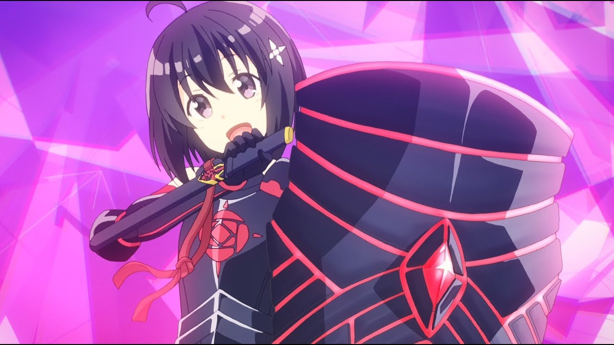
作中でメイプルとサリーによってギルド【楓の木】が結成された。メンバーは十人にも満たないが、第一回イベントの上位十位以内が三人もおり、さらにどれも一筋縄ではいかない異常枠のプレイヤーしか所属していないため、他のプレイヤーからは「人外魔境」「魔界」と呼ばれるほど恐れられている。
[1]シロップ……メイプルとサリーが第二回イベントで隠しボスの【銀翼】を倒したことで手に入れた【幻獣の卵】から生まれた亀。リクガメ型だが、移動速度はメイプルより速い。普段は人の頭ほどの大きさだが、レベルアップして得たスキル【巨大化】とメイプルが得たスキル【念力】によって空飛ぶ乗り物代わりになり、上空から毒の雨【アシッドレイン】をばら撒くえげつない攻撃が出来る。
この作品は、僕が高校生の時に小説になろうで見つけたもので、主人公が送るスローライフに癒やされる作品です。
主人公である本条 楓が親友である白峯 理沙に勧められてVRMMO『NewWorld Online』をメイプルという名前でプレイを始めました。
しかし、ゲーム初心者であるメイプルは「痛いのが嫌だ」という理由で全て防御力に振る「極振り」をしてしまう。極振りしたせいで悪戦苦闘するメイプルだったが、そこから偶然が重なって様々なスキルを獲得し、レベルが上がるとそれで得たステータスポイントをすべて極振りすることを繰り返した結果、無敵の防御力を誇るようになった。そして、第一回イベントで、レアスキルと驚異的な防御力で他のプレイヤーたちを悉く無傷で返り討ちにして見事三位の成績を収めたことで、一躍注目の的となっている。
この作品は、小説家になろうで連載されていて、カドカワBOOKSより刊行され2019年12月時点でシリーズ累計は70万部を突破しています。